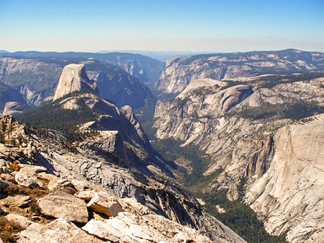

THE VIEW FROM CLOUDS REST — WEST TO HALF DOME AND YOSEMITE VALLEY [LEFT] AND TOWARD TENAYA LAKE AND THE HIGH SIERRA [RIGHT]
California's Great Views
- Mt. Shasta
- Mt. Lassen
- Sierra Buttes
- Mt. Diablo
- Pinos Mountain
Great Central Valley:
San Francisco Bay Area:
- Mt. Hamilton
- Mt. St. Helens
- Mt. Wittenberg
- Vollmer & Grizzly Peaks
- FremontPeak (above Monterey Bay)
Lake Tahoe:
- Mt. Rose
- Mt. Tallac
Death Valley:
- Telescope Peak
- Hunter Mountain
- Dry Mountain
- Tin Mountain
Yosemite:
- Yosemite View (Falls Trail)
- Columbia View
- Eagle Peak
- Old Inspiration Point
- Glacier Point
- Taft Point
- Dewey Point
- The Diving Board
- Top of Nevada Falls (Mist Trail)
- Clouds Rest
- The Cockscomb
- Mt. Clark
- Mt. Hoffman
- Mt. Dana
- Mt. Lyell
- Mt. Ritter
- Mt. Conness
- Matterhorn Peak
White & Inyo Mountains:
- Montgomery Peak
- White Mtn. Plateau Walk
- White Mountain
- Sierra View (Bristlecone Pine Road)
- Mt. Inyo
- Keynot Peak
- New York Butte
- Cerro Gordo Peak
High Sierra Nevada (north to south):
- Mt. Abbot
- Bear Creek Spire
- Mt. Humphreys
- Mt. Darwin
- Mt. Goddard
- North Palisade
- Mt. Sill
- Middle Palisade
- Split Mountain
- Goat Mountain
- Marion Peak
- Mt. Pinchot
- Mt. Clarence King
- Mt. Gardiner
- Mt. Brewer
- Junction Peak
- Mt. Tyndall
- Mt. Williamson
- Mt. Whitney
- Mt. Kaweah
- Black Kaweah
- Olancha Peak
TOP OF CLOUDS REST LOOKING DOWN ON HALF DOME

NORTH PALISADE VIEWED FROM THE SUMMIT OF MT. SILL
MT. WHITNEY SEEN FROM THE SOUTH
DEATH VALLEY FROM THE TOP OF TELESCOPE PEAK